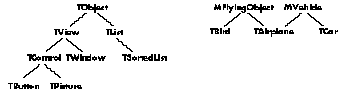

C++ is fast emerging as the premier object-based language of the 1990s. Its
expressive power combined with its down-and-dirty C heritage makes it a natural
choice for writing Macintosh applications. But beware: all is not sweetness and light.
Harnessing C++'s power without getting tripped up by some of its less savory features
isn't all that easy. Here are guidelines that make it easier to write, debug, and change
C++ programs.
When we first started using C++ several years ago, we learned the hard way--by
trial and error--a lot of what we're about to tell you. After thousands of hours of C++
programming, we've formed strong opinions about the best way to use C++. In this
unofficial style guide we tell you which features to use and which ones to avoid.
Following our techniques will lead to programs that are easier to write, debug, and
change. You may not agree with all of our guidelines--some are more a matter of taste
than of science--but we hope you'll find them useful and enlightening.
In this part you'll find fairly simple advice on formatting source files. Even if you
prefer to use a different style in your own work, you may be interested to see how we
handle these standard matters of style.
SOURCE FILE CONVENTIONS
Use the following conventions to keep your source files easy to read, easy to use, and
legally protected.
Include a copyright notice. To protect your intellectual property rights, include
the following line at the front of every file you create:
// Copyright &#A9; 1990 ~~~Your name or company~~~. // All rights reserved.
You can make the &#A9; by typing Option-g. The "All rights reserved" is specifically for
our foreign friends. (We bet you thought all you had to say was "Copyright." Ha!) In
addition, any binary files you ship should contain a copyright notice somewhere.
If you modify a file in more than one calendar year, you must list every year in which
you modified it. For example,
// Copyright &#A9; 1988-1990 ~~~Your name or company~~~. // All rights reserved.
Add helpful comments. We won't go into a lengthy discussion of comment style
here. We'll only say it's good to have them. Also, comments that describe something
subtle about the source are more helpful than comments like assign a to b.
Be careful about omitting argument names in function prototypes. It's OK
to omit dummy argument names in function prototypes, but only if the meaning is
clear without them. It's almost always necessary to include argument names when you
have more than one argument of the same type, as it's impossible to figure out which
one is which otherwise.
double cosine(double angle); // Prototype with argument name.
double cosine(double); // Reasonable omission of arg.
// name.
TPoint::TPoint(short h, short v); // Easy to understand.
TPoint::TPoint(short, short); // Impossible to figure out.
If you are getting compiler warnings of the form "warning: foo not used" where foo is
an argument to a function, leaving the argument name out of the function header for the
function's implementation will stop the warning. Whether or not an argument name
appears in the function's declaration has no bearing on the warning.
void f(short foo, long bar); // Prototype.
void f(short /* foo */, long bar) // Implementation.
{
bar = 7;
}
Put only related classes in one file. To keep your class definitions under
control and to make life easier for those trying to decipher them, follow the lead of the
MPW {CIncludes} files. Limit each header file to a single class definition or a set of
related class definitions. MPW C has always followed this convention, for example
Windows.h, Controls.h versus Toolbox.h.
On the implementation side, put only one class implementation in a given source file
(classes private to the implementation of the class may be declared and implemented in
the same source file). Name the file after the class, but without the initial T --for
example, put the class TMyView in MyView.c.
Make it easy to use your header files. Trying to figure out whether you've
included all the necessary antecedents for a header file is a pain. To save your clients
this pain, enclose the definitions in your header with code that looks like the following:
#ifndef __MYCLASS__ #define __MYCLASS__ #include "prerequisite1.h" #include "prerequisite2.h" ... definitions for MyClass #endif
Now you can include your header's prerequisites without caring whether they've
already been included elsewhere (assuming that everyone follows this convention).
The name of the preprocessor variable should be all upper case and consist of the file
name (without . h ) surrounded by two underlines on either side.
To speed up compilation, you can even do this in your files that use foo.h:
#ifndef __FOO__ #include "foo.h" #endif
which skips the overhead of reading and parsing foo.h.
Store files in Projector. As soon as a file is published for use by others (for
example, you stick it on a file server so others can use it), you should start storing it
in Projector. Projector is part of MPW 3.0. It consists of a collection of built-in
MPW commands and windows that help programmers (both individuals and teams)
control and account for changes to all the files (documentation, source, applications,
and so forth) associated with a software project. This lets you recreate old versions if
necessary, and makes sure things don't get lost.
Since the whole point of using Projector is to make it easier for those who follow you
in the great chain of software being, please use the features that will make their lives
easier. Try to maintain a proper set of versions (for example, don't remove your file
from Projector and then add it again-- that loses all the revisions), and use the
comment features when you check things in and out.
NAMING CONVENTIONS
To make C++ even more readable, you should adopt a consistent set of naming
conventions. Here at Apple we use the following conventions:
Type names All type names begin with a capital letter. In addition, class names begin
with a T for base classes, and an M for mix-in classes. See "Multiple Inheritance" in
Part 2. Examples: Boolean,TView, MAdjustable. Never use C types directly; see below.
Member names Member names should begin with an f , for "field." Member function
names need only begin with a capital letter. Examples: fVisible, Draw.
Global names Names of global variables (including static members of classes)
should begin with a g. Examples:gApplication, TGame::gPlayingField.
Local and parameter names Names of local variables and function arguments
should begin with a word whose initial letter is lower case. Examples: i, thePort,
aRegion.
Constant names Names of constants should begin with a k. Example:
kSaveDialogResID.
Abbreviations It's best to avoid abbreviations, especially ad hoc ones. Inconsistent
use of abbreviations makes it hard for clients to remember the correct name of a
function or variable. Abbreviations are OK as long as they are consistent and
universal. For example, don't use VisibleRegion some places and VisRgn others; use
one or the other throughout.
Multiple-word names In any name that contains more than one word, the first
word should follow the convention for the type of the name, and subsequent words
should immediately follow, with the first letter of each word capitalized. Do not use
underscores in names. Here are multiple-word examples of each type:
TSortedList | class name |
fSubViews | data member of class |
DrawContents | function member of class |
gDeviceList | global or static data member |
theCurrentSize | local or parameter |
kMaxStringLength | constant |
Names with global scopeAny name with global scope (for example, class names,
typedefs, constants, globals) should have a distinctive and unique name. This will help
avoid name conflicts. Names like Short and Number are fairly nondescript and likely to
wind up conflicting with identifiers from other header files accidentally (this is a big
problem with MPW and the ROM interfaces today). Better in these cases would
bekShortLived(to follow our advice on constant names) orStringLength(more
descriptive of the function). When you name something with global scope, think about
the fact that it's in a global name space and someone may have to figure out what it is
without context. Use more specific names rather than more general ones.
C++ relieves this problem somewhat by adding enumerations with class scope and
static members. Enumerations declared inside classes are accessible using
qualification, as in
class TFoo {
public:
enum {kFred, kBarney};
...
};
i = TFoo::kFred;
This lets you put constants associated with different classes into different name spaces,
somewhat like when C changed a few years back so that structure members from
different structs were in different name spaces.
Static members let you put ordinary functions and global variables associated with a
class into the scope of the class. For example:
class TView {
public:
static void Initialize();
static const TView kWhizzyView;
static const long kMagicNumber;
...
};
TView::Initialize();
...TView::kWhizzyView...
i = TView::kMagicNumber;
Putting such global functions and variables into the scope of the class helps avoid name
collisions. In fact, we frown on the use of ordinary globals: most global functions and
variables should be static members of some class. The same with constants; they
should be made members of an enumeration inside a class, if possible. Of course, global
variables that are not constants of the sort shown above shouldn't be public at all;
instead, access should be through static or normal member functions:
class TFoo {
public:
static Boolean gWhoopeeFlag;// BAD!
}
TFoo::gWhoopeeFlag = TRUE; // BAD!
THE PREPROCESSOR
One of the most powerful features of the C and C++ languages is the C preprocessor.
Don't use it.
Except for include files and conditional compilation, C++ has features that supersede
most of the techniques that used the preprocessor. Sometimes you need to use the
preprocessor to accomplish things you can't with C++, but far less often than with
straight C.
Use const for constants. Don't use #define for symbolic constants. Instead, C++
defines the const storage class. As with #define symbols, these are evaluated at
compile time. Unlike #define symbols, they follow the C scope rules and have types
associated with them. You can also use enums. For example:
#define kGreen 1 // No no
const int kGreen = 1; // Better
enum Color {kRed, kGreen, kBlue}; // Best
This prevents a host of problems. With #define symbols, for example, if you
accidentally redefine a name, the compiler will silently change the meaning of your
program. With const or enums, you'll get an error message. Even better, with enums
you can put the identifiers in the scope of an enclosing class; see "Naming
Conventions," earlier. As an extra bonus, each enumeration defined is treated as a
separate type for purposes of type checking (much like the way scalars are handled in
Pascal).
Unlike in ANSI C, objects in C++ that are declared const and initialized with
compile-time expressions are themselves compile-time constants (but only if they
are of integral type). Thus, they can be used as case labels and such.
Use enum for a set of constants. If your constants define a related set, don't use
separate const definitions. Instead, make your constants an enumerated type. For
example:
// Bleah.
const int kRed = 0;
const int kBlue = 1;
const in kGreen = 2;
// Allll Riiiight!
enum ColorComponent {kRed, kBlue, kGreen};
This causes ColorComponent to become a distinct type that is type-checked by the
compiler. Values of type ColorComponent will be automatically converted to int as
needed, but integers cannot be changed to ColorComponents without a cast. If you need
to assign particular numerical values, you can do that too:
enum ColorComponent {kRed = 0x10, kGreenk = 0x20, kBlue = 0x40};
Where possible, the type declaration should occur within the scope of a class. Then,
references to the constants outside of the class's member functions must be qualified:
class TColor {
public:
ColorComponent enum {kRed, kGreen, kBlue};
...
}
foo = TColor::kRed;
Note that the enum type name is not local to the class; only the actual constants. The
enum type name should not be qualified.
Use inline for macro functions. Function macros are another source of fun
problems in C programs, like this classic example:
#define SQUARE(x) ((x)*(x)) SQUARE(y++);
C++ allows functions to be declared inline (see also "Inline Functions" in Part 2),
which completely obviates the need for function macros. Like const, inline functions
follow the C++ scope rules and allow argument type-checking. Both member functions
and nonmember functions can be declared inline. So the preceding example becomes
inline int Square(int x)
{
return x*x;
};
Square(y++);
which does the right thing, and is actually more efficient than the macro version (as
well as being correct).
Use the preprocessor only in these cases. As stated earlier, the preprocessor
is necessary for #include files, and preprocessor symbols are necessary for
conditional compilation.
USE OF CONST
Both ANSI C and C++ add a new modifier to declarations, const. You use this modifier
to declare that the specified object cannot be changed. The compiler can then optimize
code, and also warn you if you do something that doesn't match the declaration. Here are
some examples of const declarations:
const int *foo;
This is a modifiable pointer to constant integers. foo can be changed, but what it points
to cannot be.
int *const foo;
This is a constant pointer to modifiable integers. The pointer cannot be changed (once
initialized),but the integers it points to can be changed at will.
const int *const foo;
This is a constant pointer to a constant integer. Neither the pointer nor the integer it
points to can be changed.
Note that const objects can be assigned to non-const objects (thereby making a copy),
and the modifiable copy can of course be changed. However, pointers to const objects
cannot be assigned to pointers to non-const objects, although the converse is allowed.
Both of these assignments are legal:
(const int *) = (int *); (int *) = (int *const);
Both of these assignments are illegal:
(int *) = (const int *); (int *const) = (int *);
When const is used in an argument list, it means that the argument will not be
modified. This is especially useful when you want to pass an argument by reference,
but you don't want the argument to be modified. For example:
void BlockMove(const void* source, void* destination, size_t length);
Here we are explicitly stating that the source data will not be modified, but that the
destination data will be modified. (Of course, if the length is 0, then the destination
won't actually be modified.)
All of these rules apply to class objects as well; you can declare something ( const
TView *). There used to be a hole in the language, however: you could call any member
function of an object using a const pointer to it, and that member function could modify
the object (since there was no way to declare which member functions modify the
object). For example, this was legal:
const TView *aView; ... aView->ModifySomething();
To plug this hole, member functions that will be called for const objects must now be
declared const; see the 1985-1989 paper discussed in the sidebar "Background
Reading" for details. The syntax looks like this:
class TFoo {
public:
void Bar1() const;
void Bar2();
};
...
const TFoo *fp;
fp->Bar1(); // legal
fp->Bar2(); // illegal (actually, just a warning for now)
Note that inside a const member function, the pointer has typeconst TFoo *, so you
really can't change the object. You could cast the pointer to be just aTFoo *, but then
you may be surprising your clients. Even though you think that your change to the
object is not externally visible (that is, it doesn't change the state of the object as far
as clients are concerned--one example is an internal cache), it can have an impact. If
your object is being used by an interrupt routine that "reads" it, your client may
assume that it's OK to call a const member function, since he or she thinks the object
isn't going to change. However, if the internal state of the object changes anyway,
access by multiple "readers" will cause its state to become corrupted.
Another example is an object placed in ROM. The client thinks it's all right to call a
const member function of the object, and then gets a bus error because the attempted
write access fails.
The bottom line is that if you attempt to cast your this pointer to a non-const version
inside a const member function, you had better think through the implications of this
for your clients, and you had better document it.
In this part you'll find advice on using particular features of the C++ language. The
topics are arranged roughly in order of increasing difficulty.
GLOBAL VARIABLES (!)
Static class members are the same as global variables (actually,
better). Static class members do have one major advantage over regular globals:
scope. Regular globals (that is,static externvariables) have global scope. That means
there are potential name collisions with globals from any otherinclude file the
developer may use. Static class members, however, have full scoping: they're qualified
by the name of their class, and don't conflict with any identifier outside the class. They
can also be protected. If you were going to have a simple global, consider a static
member instead.
Be careful about static initialization. If you design a class that depends on
some other facility in its constructor, be careful about order dependencies in static
initialization. The order in which static constructors (that is, the constructors of
objects with static storage class) get called is undefined. You cannot count on one
object being initialized before another. Therefore, if you have such a dependency, you
must either document that your class cannot be used for static objects, or you must use
"lazy evaluation" to defer the dependency until later.
INLINE FUNCTIONS
We mentioned inline functions under "The Preprocessor," earlier. Never use them.
Well, hardly ever. The main reason is that they get compiled into your caller's code.
This makes them a tad difficult to override. Also, you have to ship their source code to
everyone. There are, however, a few times when it's OK to use them.
Use an inline function if it expands to call to something else. If your
inline function just calls something else that isn't inline, that's fine, as long as the
other function has identical semantics . An example: You might have a class that
defines a virtual function IsEqual, which compares two objects for equality. It also has
an inline definition for operator ==, as a notational convenience. Since operator==
just turns around and calls the IsEqual function, it's OK for it to be inline and not
virtual. This does not apply if your function just happens to have a one-line
implementation.
Use an inline function if efficiency is very, very important and you'll
never change it. Of course, the othertime it's OK to use inline is if efficiency is
extremely important. Note that code size may increase due to duplication of code. You
may actually decrease system performance by making something inline , since you're
increasing the amount of code that must fit in memory. Also, once a function is more
than a couple of lines long, the function call overhead is a very small fraction of the
total time, and you are not buying much by making it inline.
An example is addition for a complex number type; here, the efficiency consideration
together with the low probability of a future change makes an inline implementation a
good idea. The complex number implementation shipped with C++ makes addition and
subtraction inlines (fairly short), but makes multiplication and division regular
functions (they are longer, so the overhead for a call is less important and the code
size issue is more important).
If you don'tknow (that is, God has told you in person) that your implementation must
be inline,don't make it inline . Build it normally and thenmeasure the performance.
Experience has shown again and again that programmers spend lots of time optimizing
code that hardly ever gets executed, while totally missing the real bottlenecks. The
empirical approach is much more reliable. Experience has also shown that a better
algorithm or smarter data structures will buy you a lot more performance than code
tweaking.
Don't write inlines in declarations. C++ has two ways of declaring an inline
member function (of course). One is to declare the member function normally and then
supply an inline function definition later in the same header file. The other is to write
the function definition directly in the class declaration. Never use this latter form;
always declare the function normally and then put an inline definition at the end of the
file. That way, it's much easier to change between inline and regular implementations
of a function, and it's no less efficient. The fact that something is inline should not be
made obvious in the class declaration, since clients may start counting on it.
class TFoo {
public:
int TweedleDee() { return 1; }; // Bad!
int TweedleDum(); // Good!
};
inline int TFoo::TweedleDum()
{
return 2;
};
UNSPECIFIED AND DEFAULT ARGUMENTS
It's possible to partially circumvent the strong type checking C++ imposes on function
arguments. You should avoid doing this if at all possible.
Don't use unspecified arguments. C++, like ANSI C, allows you to cling to C's
wild and woolly past, by declaring functions that take unspecified numbers and types of
arguments, the classic example being
void printf(char *, ...);
This is a cheesy leftover from the Cretaceous era. There are very few functions indeed
that need to have an interface like this. If you want to be able to omit arguments, for
example, you can use defaultarguments or function overloading (both defined below).
Unspecified arguments come from hell.
Do use default arguments, but cautiously. A better technique than unspecified
arguments is default arguments. You can specify default values for arguments that are
only used sometimes. This is especially handy in constructors. For example,
TView::TView(TVPoint itsSize, TVPoint itsLocation,
TView *itsSuperView = NIL);
which can be called either with three arguments or with two. This can help you avoid
that agonizing decision as to whether to include an option or not. However, be sparing;
clearly, long strings of defaults can make it hard to figure out what's going on.
Furthermore, you can only leave off arguments at the end, not the middle, so if you
have ten defaults and someone wants to specify the last one, they must specify the
preceding nine as well. This sort of defeats the idea. Having more than two default
arguments is a bad idea, and even two is questionable.
Also remember that for both default arguments and function overloading, having too
many versions of the same function decreases the safety provided by type checking, and
makes it more likely that you will accidentally call a different version from the one
you intended to call.
FUNCTION NAME OVERLOADING
C++ also lets you overload function names, by letting two functions (member or
nonmember) have the same name as long as the types of their arguments differ. This
feature is useful when you want to have different versions of the same function; they
should all be related. For example, you may want to have a constructor that takes lots
of options, as well as one that is simple to use. Also, you may want to make functions
that take different types. Examples include:
Rectangle::Rectangle(Point leftTop, Point rightBottom)
Rectangle::Rectangle(short top, short left, short bottom,
short right)
void TPort::MoveTo(short, short)
void TPort::MoveTo(Point)
TComplex TComplex::Add(TComplex)
TComplex TComplex::Add(int)
This can be very useful but also can cause problems.
Don't unintentionally use the wrong argument type. The biggest problem is
the unintentional use of the wrong argument type when overloading, which defines a
new function. If TView has a member function
TView::Print(const TPrintRecord *)
and you define a subclass where, intending to override this function, you declare
TMyView::Print(const TStdPrintRecord *)
or
TMyView::Print(TPrintRecord *)
or even
TMyView::print(const TPrintRecord *)
because you forgot the type of the original argument (or misspelled the name), C++
assumes you don't want to overload the original function and simply declares it as a
new function. You have not overridden the original; it's still available. The latest
version of CFront will warn you about the first two cases, but not the last.
Also remember that, as mentioned earlier, the more variants a function has, the easier
it is to call the wrong one unintentionally because the arguments you supply just
happen to match another variant.
Watch your overrides. If you have an overloaded member function (whether
virtual or not), and you override it in a derived class, then your override hides all
overloaded variants of that member function, not just the one you overrode . Thus, if
you want to override an overloaded member function, you must override all of the
overloaded variants. C++ treats the overloaded function as a single entity; the scope
resolution rule for C++ is to find the first class that has any function with that name
defined, then look for a match based on argument type. The C++ team at AT&T believes
this is the correct rule; their reasoning is that an overloaded set of functions is really
just one function with a bunch of variants, and that you should not be naming functions
with the same name unless they are really the same function.
An example that illustrates this behavior follows:
class A {
public:
void Foo(long);
void Foo(double);
};
class B: public A {
public:
void Foo(double);
};
B bar;
bar.Foo(2);
The call actually winds up calling B::Foo(double) after coercing the integer
argument to double.
On a positive note, CFront will warn you if you override some but not all of a set of
overloaded member functions. For details, see the 1985-1989 paper discussed in the
"Background Reading" sidebar, and the reference manual.
Don't abuse function overloading. Function overloading can be abused. Functions
should not have the same name unless they basically perform the same operation, as in
the preceding examples. If that isthe case, then having the functions identically named
can be a great help in reducing the number of things a programmer must remember.
OPERATOR OVERLOADING
Another fun C++ feature is the ability to define operators for your own classes. If you
define a fixed- point data type, C++ lets you define the standard arithmetic operators
for it, which makes code a lot easier to read.
Use operator overloading only where appropriate and clear. Operator
overloading also has tremendous potential for abuse. Defining the + operator for
fixed-point numbers helps clarify code. Defining it as set union is also fairly clear.
Defining => to mean "send a message" is crazy. Operator redefinition only helps when
the new function is similar to the standard meaning of the operator; otherwise, it just
confuses people. An example is C++'s streams facility, which redefines < and > as
output and input operators. This confuses a lot of people.
If you like, use functional syntax to call a base class's operator. C++
occasionally delivers a pleasant surprise. One example is the syntax for calling
overloaded operators. Of course, you can use the usual inline operator syntax; that's
why C++ has operator overloading. The surprise is that you can also use functional
syntax, which is sometimes essential, especially for calling a base class operator.
Here is an example of a subclass operator using the base class's operator:
const TWindow& TWindow::operator=(const TView &v)
{
this->TView::operator=(v);
return *this;
}
(The explicit this-> is actually unnecessary here but was included for clarity.) In this
example,TWindow has a base class TView, and we want to be able to assign a TView to
a TWindow by just copying the TView part and leaving the rest of TWindow alone. To do
this, we want to use TView's assignment operator. The functional notation here is the
only way to do it. The pleasant surprise was that this notation is allowed.
TYPE COERCION
Use type coercion selectively. Like so many C++ features, type coercion can
either clarify or obfuscate your code. If a type coercion seems "natural," like the
coercion between reals and integers, then providing a coercion function seems like a
good idea. If the coercion is unusual or nonsensical, then the existence of a coercion
function can make it very hard to figure out what's going on. In the latter case, you
should define a conversion function that must be called explicitly.
In general, coercion operators are useful in a way similar to operator overloading, and
the same guidelines make sense.
Define type coercion rules for C++ to use. C++ will automatically coerce one
type to another, but only if there is a direct way of doing so. In other words, if a
coercion is defined from type A to type B, C++ will use it automatically where
appropriate. It will not concatenate coercion operators if there is not a direct
coercion. So even though a coercion may be defined from type A to type B, and type B to
type C, C++ will not automatically coercion type A to type C (you can do it explicitly
via casts, though).
There are two ways of defining type coercions for C++ to use: constructors and type
coercion operators. They are appropriate under different circumstances. Note that
since all coercion operators must be member functions of some class, it is not possible
to define a coercion from one nonclass type to another nonclass type. Also note that if
more than one function is defined to perform the same coercion, they cannot be used
implicitly or via a cast, since an ambiguity exists asto which to call. They can still be
invoked explicitly.
If you have a constructor with a prototype that looks like any of the following:
TargetClass::TargetClass(SourceType) TargetClass::TargetClass(SourceType &) TargetClass::TargetClass(const SourceType &)
then C++ will use it to convert from SourceType to TargetClass where appropriate.
This form is useful when (1) the target type is a class (it can't be used for a primitive
target type), and (2) the author of the target type wants to provide a coercion. If
either of these conditions don't hold, you can use the second form of type coercion.
If the source type is a class, you can define a member operator function to perform the
coercion. These operators have prototypes that look like
SourceClass::operator TargetType()
TargetType may be either a primitive type or a class. It need not be the name of a type;
it can be any type specifier (as long as it does not containarray of []or function ()
forms. Those must be handled via a typedef). This form is appropriate when the target
type is not a class, or the source code for the target type is not available (that is, the
coercion is being provided by someone else).
ENCAPSULATION AND DATA-HIDING
Make explicit use of public, private, protected. C++ thoughtfully allows
you to leave out the private keyword in several places. Don't: it decreases C++'s
well-known clarity. Class definitions should always explicitly state the visibility of
their members and/or base classes. Write it like this:
class TFoo: public TBar, private MBaz {
public:
public members;
protected:
protected members;
private:
private members;
};
Your public interface should come before your protected interface, and since your
private interface is only necessary to make the compiler happy, it should be last.
Use no public or protected members that aren't functions. Always make all
member variables private. (It's OK to make functions protected or public. In fact,
classes that don't are very boring.) You can provide access functions to get and set your
variables if you want (although you should think about exporting a more abstract
interface instead). If you're really concerned with performance, you can make those
functions inline (but see "Inline Functions," earlier). Remember, don't compromise
for the sake of performance until you have numbers to base your decision on!
Understand what "protected" really means. What the "protected" access mode
means is not completely clear from Bjarne's various books and papers, so we will
attempt to clarify the issue.
When a member of a class is declared protected, to clients of the class it is as if the
member were private. Subclasses, however, can access the member as if it were
declared private to them. This means that a subclass can access the member, but only
as one of its own private fields. Specifically, itcannot access a protected field of its
parent class via a pointer to the parent class, only via a pointer to itself (or a
descendant). Here are some examples:
class A {
protected:
void Bar();
};
class B: public A {
void Foo();
};
class C: public B {
...
};
void B::Foo()
{
A *pa;
B *pb;
C *pc;
pa->Bar(); // Illegal: A::Bar() is "private"
Bar(); // OK: "this" is of type B*
pb->Bar(); // Also OK
pc->Bar(); // Also OK
};
Protect constructors for abstract base classes. It's frequently useful to have
a class that is not meant to be instantiated as an actual object, but only to be used as a
base class for other classes. Examples include classes such as TApplication or TView.
Such classes are called abstract base classes. If you want to enforce this status, you
can make it impossible to instantiate such a class by making all of its constructors
protected. In that case, the object cannot be created by itself, but only as part of a
derived class.
In addition, there is a way to declare a member function abstract (that is, to require
that it be overridden in descendants); this is called a pure virtual function . A class
with such a member function cannot be instantiated, nor can any descendant class,
unless all such functions are overridden. The syntax for this is as follows:
class Foo {
public:
virtual void Bar() = 0;
};
You can also declare some (but not all) of the constructors for a class protected if you
want those constructors to be used only by derived classes. The class can still be
instantiated using the constructors that are public.
As a shortcut, declare private base classes. When you declare a base class
private in C++, the derived class inherits all of its members as private members.
This means that the derived class is not considered a subtype of the base class, even
though it is a subclass. You cannot pass a pointer to an object of the derived class when
a pointer to the base is expected. This lets you inherit the behavior of a class without
inheriting its type signature.
Since the derived class is not a subtype, it doesn't have an "is-a" relationship with the
base class. Why not just make it a member, then? This is what you would normally do.
However, if you need toreexport most of the functionality of the base class, you would
have to write wrapper functions in your derived class that turned around and called
the member class functions. Instead, you can use this slimy shortcut.By making the
class a private base class, you don't inherit the type signature, but you do inherit the
functionality, which can be made selectively visible without having to write wrapper
functions. If A is a private base class of B, and B wants to make A::Foo() visible, then
write the following in the declaration of B:
...
public:
void A::Foo();
which makes Foo() visible to clients of B.
Use friends sparingly. Friend classes and functions are another C++ feature.
Needless to say, they are a breach in the safety of types and in the integrity of the data
abstraction provided by classes. If you have friends, you're probably doing something
wrong (like taking frequent showers).
About the only time this feature should be used is when implementing binary operators
that can't be member functions. Another circumstance is a set of tightly related classes
(an example from Bjarne's book is matrices and vectors). Generally, however, avoid
friend classes and functions.
Hide implementation classes by declaring them incomplete. Sometimes a
public class (one that you export to clients) must refer to a class that is only used in
your implementation. How do you avoid exposing the implementation class? If the only
reference is a pointer, then you can declare the implementation class as an incomplete
class:
class TImplementation;
class TInterface {
...
private:
TImplementation *fHidden;
};
This also works if your member functions have arguments of typeTImplementation *or
TImplementation &. If you have actualTImplementationobjects as fields, though, you
must include the full declaration of TImplementation. Don't expose yourself. The
most important thing to remember is not to expose your implementation to either your
clients or your subclasses (which are really just another kind of client). If you do so,
you are tying the hands of those who must enhance your code.
It is very important to make sure that your class acts like a black box. The interface
you export to clients and subclasses should reflect precisely what they need to know
and nothing more. You should ask yourself, for every member function you export
(remember, you're not exporting any data members, right?), "Does my client (or
subclass) really need to know this, or could I recast the interface to reveal less?"
If you find that the interface to your class consists mostly of functions to get and set
your private data members, you should ask yourself whether your object is really
defining an abstract enough interface. The key is to think about the abstraction that
your object represents and how clients view and use that abstraction, not how it is
implemented. This is possibly the hardest thing to do in object-based design, but is
also one of the biggest advantages and has the biggest long-term payoff.
See Alan Snyder's paper. For an excellent discussion of the issues involved in data
abstraction, encapsulation, and typing, see Alan Snyder's paper "Encapsulation and
Inheritance in object-based Programming Languages" in the 1986 OOPSLA
proceedings.
(Almost) all member functions should be virtual. Virtual functions are
pretty inexpensive. Because of this, any class that is intended to be used in a
polymorphic fashion (that is, a pointer to a subclass may be passed where a pointer to
the class is expected) should have all of its functions virtual. It's hard to guess in
advance which functions may be overridden in the future (although private functions
can't be, and so need not be virtual).
You should only use nonvirtual functions where you are very sure that the class (or
this particular aspect of it) will never have a subclass . An example is a fixed-point
data type, which is self-contained, or a graphics point, or other similar classes.
The assignment operator is also a special case. Assignment isn't inherited like other
operators. If you do not define an assignment operator, one is automatically defined for
you; it consists of calls to the assignment operators of all of your base classes and
members (this is discussed in the 1985-1989 paper mentioned in the sidebar
"Background Reading"). It's OK to make your assignment operator virtual, but it's only
useful under rather specialized circumstances. A virtual function call will be
generated for a virtual assignment operator only when the left-hand side of an
assignment is a reference or a dereferenced pointer.
(Almost) all destructors should be virtual. What the !@&#%! is a virtual
destructor, you ask? And well you might, because this is actually something you should
never have had to worry about. What do you think happens here?
class A {
~A();
};
class B: A {
~B();
};
A *foo = new B;
delete foo;
B::~B gets called, then A::~A, right? Wrong! Only A::~A gets called! Isn't that special?
For the right thing to happen, you must declare your destructors virtual. For example,
virtual ~A(); virtual ~B();
If you do this, the right destructors will get called. Needless to say, any class that has
a virtual member function, inherits one, or is used in a polymorphic fashion must
have its destructor declared virtual, or horrible things will happen.
Be careful when you call virtual functions in constructors and
destructors. If you call a virtual function from a constructor, be aware that the
version of the function that corresponds to the constructor will be called, not the
version that would normally be called. For example, if A has a method foo, B is a
subclass of A, and B overrides foo, a call to foo from A's constructor calls A::foo, not
B::foo. A call to foo from B's constructor does call B::foo. This is sufficiently confusing
that it is best not to call a virtual function from a constructor at all. Naturally, this
only applies to virtual functions of the object whose constructor is running; virtual
functions of other objects (including those of the same class) are perfectly fine
(unless they in turn call one of your virtual functions).
If you think about it, it doesn't make sense to call virtual functions from constructors
and destructors. Since base class constructors are called before derived class
constructors, and base class destructors are called after derived class destructors, the
object is in a partially valid state. If a virtual function overridden in a derived class is
called from the base class constructor, it may access derived class features that have
not been initialized. Similarly, if it is called from the destructor, it may access
features that have already been destroyed.
Use virtual functions the right way. If you are coming from the
non-object-based programming world, a word about use of virtual functions might be
in order. Virtual functions should be used whenever you want to have more than one
implementation of the same abstract class. They allow the system to defer the decision
on which function to execute until run time.
The right way to use virtual functions is to structure them around well-defined
abstractions. If someone is to override a virtual function, they must have a clear
definition of what the function does, even if they only call the inherited version after a
little bit of processing.
The wrong way to use virtual functions is via a "come-from" mechanism like some
Macintosh trap patches. Don't override a virtual function because "I know it's called
from over here with these parameters." Needless to say, this wreaks havoc with the
data abstractions that are one of the major benefits of object-based programming. This
is why the function must have a definition that is clear in terms of the object it
belongs to, without any reference to its possible callers. If you override a function, the
override must make sense in terms of the definition of the function itself.
MULTIPLE INHERITANCEMultiple inheritance is a fairly new feature in
object-based languages. To understand it better, look at Figure 1. In the single
inheritance class hierarchy on the left, each class has only one parent. By contrast, in
the multiple inheritance class hierarchy on the right, a class can have more than one
parent. Note, for instance, that TAirplane inherits from both MFlyingObject and
MVehicle.

Figure 1. Single Inheritance vs. Multiple Inheritance
Use in a controlled fashion. With multiple inheritance, there is great potential
for designing a confusing class hierarchy that resembles a spaghetti bowl. Here are
some guidelines for use of multiple inheritance.
We start by artificially partitioning classes into two categories: base classes and
mix-in classes. To distinguish the two, base class names begin with T (for example,
TView), and mix- in class names begin with M (for example, MEditable). Base classes
represent fundamental functional objects (like a car); mix-ins represent optional
functionality (like power steering).
The first guideline is: A class can inherit from zero or one base classes, plus zero or
more mix-in classes. If a class does not inherit from a base class, it probably should
be a mix-in class (though not always, especially if it is at the root of a hierarchy).
The second guideline is: A class that inherits from a base class is itself a base class; it
cannot be a mix-in class. Mix-in classes can only inherit from other mix-in classes.
The net effect of these two rules is that the base classes form a conventional,
tree-structured inheritance hierarchy rather than an arbitrary acyclic graph. This
makes the base class hierarchy much easier to understand. Mix-ins then become
add-in "options" that do not fundamentally alter the inheritance hierarchy. Like all
guidelines, this one is not meant to be hard and fast. Multiple inheritance can and
should be used in other ways as well if it makes sense. The fundamental thing to keep in
mind is that people (including programmers) are better at understanding regular
structures than arbitrary acyclic graphs.
As part of multiple inheritance, C++ contains a new feature called virtual base
classes. The trouble is, if both B and C are subclasses of A, and D has both B and C as
base classes, then D will have two A's if A is not virtual, but only one A if it is. This is
a very confusing situation, and no matter which alternative you choose, programmers
will have a hard time understanding it. To avoid getting into a situation like this,
follow the preceding guidelines for use of multiple inheritance. And incidentally, using
virtual bases presents another problem: once you have a pointer to a virtual base,
there's no way to convert it back into a pointer to its enclosing class.
It's OK to have multiple occurrences of a base. Sometimes the same base class
(it should be a mix-in) will occur more than once as an ancestor of a class. It doesn't
hurt to have a base class twice (aside from wasting space because of multiple pointers
to the virtual function table) and if you need to cast back from the base class pointer to
something else you may not have a choice, but it's really only useful to have a base
class twice if data members are associated with it.
In this part you'll find a discussion of general problems of programming in C++.
WORKING IN A VALUE-BASED LANGUAGE
C++ has a different object model from Object Pascal or Smalltalk. The most
fundamental difference is that whereas Object Pascal and Smalltalk are reference
based (that is, like Lisp, assignment means copying a pointer), C++ is value based. By
this we mean that classes in C++ are treated just like primitive types, whereas in
Object Pascal objects are treated very differently from primitive types. This is
actually a benefit, since all types in a C++ program are handled in the same style, as
opposed to the multiple styles in Object Pascal. (Smalltalk, like C++, is also
self-consistent.) There are some implications for your C++ programming style,
however.
Don't use pointers unless you mean it. Pointers should be used in C++ in the
same way you would use them in plain C or plain Pascal; that is, when you really want
multiple references to the same object, or a dynamic data structure. If you really just
want to pass something by reference to avoid copying, then you can use a reference
rather than a pointer (see below). In fact, you can even pass a class by value if the
copying overhead isn't too high and you don't care about polymorphism (for example,
the class has no virtual functions).
Don't allocate storage unless you must. In a reference-based language like
Object Pascal or Smalltalk, all objects must be heap allocated. In C++, it's better to
treat values the same way you would in C. For example, instead of defining a Clone
operator, overload the assignment operator; instead of allocating and returning an
object, have the caller pass one in by reference and set it. This allows your classes to
be treated just like primitive types, and in the same style. In general, leave storage
allocation up to the class client.
By doing so, you can make use of one of C++'s unique features: the ability to have
automatic and static objects, and objects as members of classes. No matter how clever
or efficient a storage allocator we have, it can never be as fast as allocating an object
on the stack, or as part of another object. If an object can be local to a function, there
is no storage allocation overhead. Many objects have very localized scope and do not
need to be allocated on the heap.
There is one exception to the rule about allocating an object and returning a pointer:
you must do this when the type of the returned object may vary. Anytime a function
must choose what type of object to return, the function must allocate the object, not
the caller.
It's still all right for the caller to allocate storage even when the type of object being
passed in may vary, since references, like pointers, can be used polymorphically
(that is, you can specify a TSubFoo&to an argument of type TFoo&). The key question
is whether the caller or the function must determine the type. In the former case,
leave allocation to the client; in the latter, the function mustallocate the object on the
heap and return it.
Summary: pretend everything is a primitive. In summary, you should design
your classes so that using them is just like using a primitive type in C. This will let
the client use them in a style that is "natural" for C. In cases where you wish to avoid
copying, pass arguments by reference. Use pointers only when you want a truly
dynamic data structure, or when polymorphism demands it (note that references allow
for polymorphism also, since they are really just a different kind of pointer).
POINTERS VERSUS REFERENCES
C++ provides two very similar mechanisms for passing references to entities. One is
the familiar pointer from classic C; the other is a new concept, the reference. Pointers
are declared as follows:
TFoo *fooPtr;
But references are declared like this:
TFoo &fooRef;
A pointer must be dereferenced to access what it points to, but a reference can be used
as is, and acts as a synonym for the object it refers to, both for fetching and storing.
This makes it similar to other highly refined mechanisms, such as FORTRAN's
equivalence statement (or VAR parameters in Pascal). The entity to which a reference
refers may only be set when the reference is created; in this respect it is somewhat
like a const pointer that gets a virtual * put in front of it wherever it is used, and
puts a virtual & in front of the expression from which it is initialized. Here are two
illustrative examples:
void Bump(int *ip)
{
*ip += 1;
}
Bump(&j);
void BumpR(int &i)
{
i += 1;
}
BumpR(j);
There are certain circumstances where references are mandatory--for example,
overloading the assignment operator. In other cases, either a pointer or a reference
can be used. The question is, which should be used when?
References should be used when a parameter is to be passed "by reference," as in
Pascal. This means that the called function is going to forget about the argument as soon
as it returns. A regularreference should be used if you are going to modify the
argument ( TFoo &), and a const reference should be used if you are not going to modify
it but don't want the overhead of call by value ( const TFoo &).
Pointers should be used when the function you are calling is going to retain a reference
(an alias) to the object you are passing in, such as when you are constructing a
dynamic data structure. An example is putting an object into a MacApp TList: the TList
retains a pointer to your copy of the object. The explicit use of pointers lets the reader
know that aliasing is occurring.
By using pointers and references appropriately, you can increase the readability of
your code by giving the reader hints as to what is going on.
PORTABILITY
Don't make assumptions. The Macintosh is the best personal computer in the
world, but there are times when you'll want to run your code on a different machine.
For example, you might have access to a CRAY or a VAX. Don't make assumptions that
are only valid for the 680x0 family of processors. For example:
ANSI specifies the following about C's built in types. This is all you can safely assume:
If you need exact information, you can use the symbols defined in limits.h. or float.h.
Remember, though, that the values of these symbols can change from processor to
processor or compiler to compiler, within the limits just defined (for more
information, see the ANSI C specification).
It's very easy to write nonportable code, and it takes some vigilance to avoid it. It's
well worth the effort, however, the first time you port to a different processor, or try
to use a different compiler.
Pick a canonical format for messages and data files. Remember that
AppleTalk networks connect to non- Apple computers such as the Intel-8x86 based
MS-DOS machines. Thus, if you write or read any data in a context where it might go to
or come from a different CPU, you have to worry about formats. Such situations
include reading or writing disk files, or sending data over a network (or even over
NuBus). The other CPU might even have a different byte order! The only solution to
this problem is to pick a canonical format for your messages or data files.
Just because you have a canonical format doesn't mean you must pay a big overhead
every time you access your data. An alternative is to perform the translation to or
from canonical format at a predetermined time. For example, outline fonts might have
a certain canonical format, which may not be convenient for a particular processor to
deal with. However, they can certainly be converted to a convenient local format when
the font is installed.
Don't use (gasp!) naked C types. Another way to make your life miserable is to
use primitive C data types in your declarations. This is a bad idea, since if the
implementation ever changes you have to do a lot of editing by hand. It's much better to
declare a type (via class definition or typedef) that represents the abstract concept
you want to represent, then phrase your declarations that way. This lets you change
your implementation by simply editing the original type definition. Think of these
types as giving your data physical units, like kilograms or meters/second. This
prevents you from accidentally assigning a length to a variable with type Kilogram,
catching more errors at compile time.
So instead of
long time; short mouseX; char *menuName;
use (for example)
typedef long TimeStamp;
typedef short Coordinate;
class TString { … };
.
.
.
TimeStamp time;
Coordinate mouseX;
TString menuName;
It's OK to use a raw C type under certain circumstances, such as when the quantity is
machine dependent, or when it can be characterized as (for example) a small integer.
Otherwise, though, it's best to give yourself flexibility down the road.
Two ANSI C header files, StdDef.h and Limits.h, contain useful definitions. Here are two
of the more useful ones:
size_t
The type returned by the built-in Csizeoffunction. This is useful for representing the
sizes of things.
ptrdiff_t
A type that can represent the difference between any two pointers.
The astute reader has noticed that these names do not conform to our guidelines. In the
interest ofclarity, however, we deem it better to use the names as defined by the ANSI
C committee.
Another item worthy of note: if a data type is unsigned, declare it unsigned; this helps
avoid nasty bugs down the road.
ERROR REPORTING
Returned error codes are (ironically) a very error-prone technique. MacApp's
standard is to use exceptions: a structured technique for reporting exceptions back to a
function's callers.
Unfortunately, the exception scheme does not handle an important case: an exception
that occurs in a constructor. Handling this properly requires compiler support, since
any base class and/or member constructors that have already been called must have
their corresponding destructors called; only the compiler can know this. Until we get
an official C++ exception scheme, you must handle this problem on a case-by-case
basis.
Signaling an exception in a destructor is not a good idea, since any destructive behavior
that has already taken place probably cannot be reversed. Don't do it.
BACKGROUND READING Bring yourself up to date. You've just finished reading
Bjarne Stroustrup's book The C++ Programming Language (Prentice-Hall, 1987)
and you're feeling pretty smug. You've finally got C++ nailed.
Wrong.
You still have one more reference to read: the paper "The Evolution of C++: 1985 to
1989." This paper is included with the AT&T C++ Selected Readings manual, which is
available in conjunction with MPW C++.
At least one statement made in earlier versions of the paper (which were titled "The
Evolution of C++: 1985 to 1987") is wrong. The order of execution of base class and
member constructors and destructors is determined by their declaration order, not by
the order in which calls are made to such constructors in your constructor's header.
This is a change to the language that was made after the 1985-1987 paper was
written; see the 1985-1989 version for a full discussion.
Other books that give a good discussion of features that are new in C++ 2.0 are The
C++ Primer by Lippman (Addison-Wesley, 1989) and The C++ Answer Book by
Hansen (Addison-Wesley, 1990). The latter book not only discusses 2.0 but also gives
solutions to all of the problems in Stroustrup's book.
Finally, look for Bjarne's own updated manual, The Annotated C++ Reference Manual
(with Ellis, Addison- Wesley) to be published later this year.
Read up on ANSI C. If you were whelped on good ole Kernighan and Ritchie C, you
may have a few surprises in store for you. There have been several changes to the
language as part of the ANSI standardization process. If you learned C a while back, it
might be a good idea to brush up on ANSI C. We highly recommend the second edition of
Kernighan and Ritchie ( The C Programming Language , Prentice-Hall, 1989), which
has appendixes that detail the differences between the original language and the ANSI
version. Another good book is C: A Reference Manua l, 2nd ed., by Harbison and Steele
(Prentice- Hall, 1987). For purists, the ANSI C draft and rationale are available
from ANSI itself ( Draft Proposed American National Standard for Information
Systems--Programming Language C , 1988, ANSI Doc No X3J11/88-159).
Study object-based design. Doing a good job of object-based software design
requires more than just learning an object-based language. The whole point of
object-based languages is to permit a different approach to software design. This
approach takes time and energy to learn. Without spending that time and energy, it's
not possible to gain the full benefits of the approach.
That's why you should readAbstraction and Specification in Program Development by
Liskov (McGraw-Hill, 1987) and Object-Oriented Software Construction by Meyer
(Prentice-Hall, 1988). The first book does not discuss object-based design per se,
but it does cover the topic of data abstraction, an important component of object-based
design, very well. The second book is a little pedantic in places, but has many, many
good suggestions and ideas in it. Reading both is hard work (especially since both are
based on obscure languages), but will help you a great deal.
One example of an issue that Object-Oriented Software Construction covers quite well
is the question of whether to use a class as a base (inherit from it) or a member
(include it as a field). As Bertrand Meyer notes, the distinction is whether the new
class can act as an instance of its base class (that is, it "is-a" object of that type) or
uses an instance of the class (it "has-a" object of that type). For example, an
automobile "is- a" vehicle, but it "has-a" engine. For good discussions of this and
other issues, read the book (this particular discussion starts on page 333).
Brian Wilkerson's "How to Design an Object-Based Application," in this issue of
develop, is a good language-independent introduction to object-based design. You should
find the design techniques presented in his article useful in your own work.
Taking the time to learn how to design with objects may be painful (after all, we're all
working as hard as we can already), but it can make a big difference in the quality of
the system when it's done. Every extra minute you take to improve the design now will
pay off in easier maintenance and enhancements later.
We've covered a lot of ground in this article. Don't feel bad if you didn't understand
every point we tried to make. It took us years of working with objects before we
figured out what virtual base classes were good for! As you use C++ in your own work,
think about the rules we've laid down and see if they aren't applicable to your own
situation. Come back and read these guidelines every so often, just to refresh your
memory. And finally, don't be shy about formulating some guidelines of your own!
DAVID GOLDSMITH has been at Apple for four years, and now focuses his energies on
future system software. He has also worked on MacApp and the Macintosh Toolbox
(during the inception of System 6.0). He received an MA in physics from Harvard in
1980, and since has worked for Wang, Mosaic Technologies, and as a contractor for
Lotus. For him, the thrill of the job is "making computers available to people whose
lives don't revolve around computers." His main interest outside the office is his
family, with its new member, eight-month-old Jane. He also enjoys reading and
listening to classical music. *
"HackerJack" Palevich is our local meerkat handler (look that one up in National
Geographic!). He has a degree in computer science from MIT, where his "Thesis of
Terror" was a prelude to his video game days at Atari. Two years at Apple have landed
him in video conferencing and screen sharing. As the son of an American diplomat, he's
lived in some pretty interesting places (Berlin, Poland, Laos, Greece, Maryland, and
Cupertino). He didn't buy an Apple II in the eleventh grade, and has regretted it since.
His interests include filmmaking, animation, and aerobics. He claims to be halfway a
nerd, but only his wife knows for sure. He also likes to tell stories, so we're not sure
that any of this is really true. *
This is an enhanced version of an internal, informal Apple style guide written by
David Goldsmith. Jack Palevich edited the original document to bring it into its
current form. The opinions expressed in this document are David's and/or Jack's.
They are not necessarily those of Apple Computer, Incorporated. This work is
Copyright &#A9; 1989-1990 Apple Computer, Inc. . All rights reserved. *